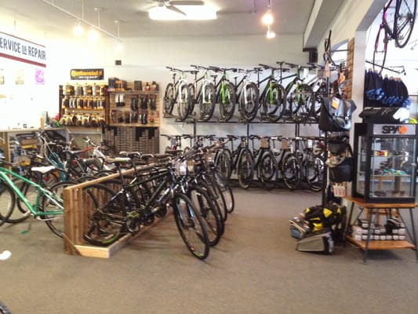
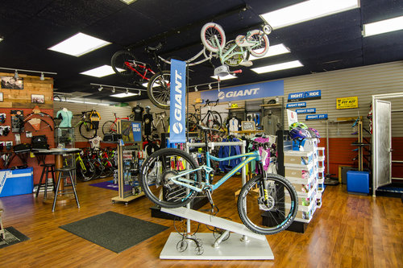
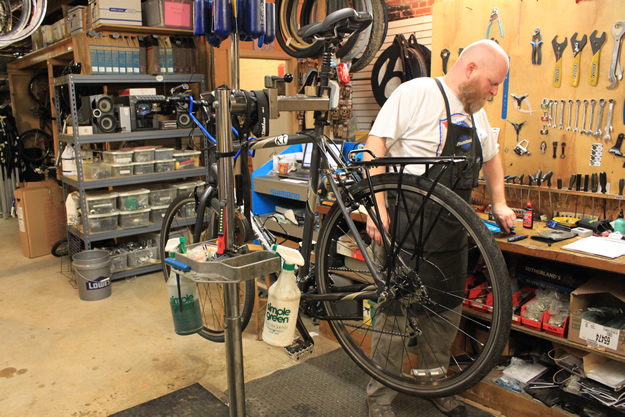

About
Hi there! Welcome to Mindset Bike Fit! This is a web app that is designed to help you be more comfortable on the bike! There are a lot of moving parts when trying to fit yourself on a bike, after all the position that you must be on to ride a bike is very uncomfortable! This web app is mainly developed for a bike shop that is in Charlotte called Bicycle Sport Charlotte. In this real life shop we actually do real life bike fits for all different types of bikes. This web app that we have developed (and are still developing) is not a means to replace a in person bike fit but to help you understand more about the parts that go into bike fitting and what is affecting your fit.
Bicycle Sport Charlotte has been around since 1992 and we are mainly in the business of selling and fixing bikes and bike parts/accessories. We love to be active in the Charlotte community and so we often put on group rides with a variety of speeds and difficulties that can suit anyone from the beginner level to the advanced level!
A Few Images of our Shop!
- 
- 
- 